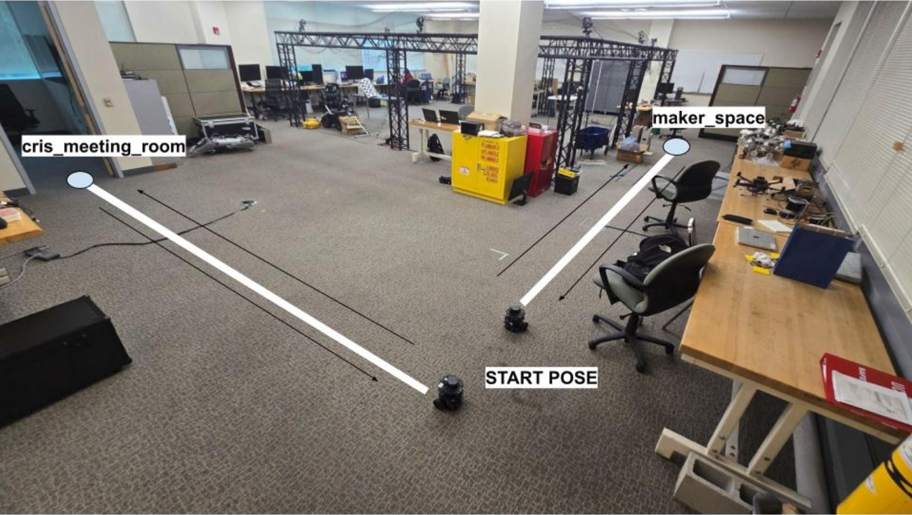

Fleet Coordination and Traffic Management in Simulated Environments
Abstract
This project presents the design and implementation of a multi-robot navigation system using the Robotics Middleware Framework (RMF) and TurtleBot3 robots. The system demonstrates coordinated task allocation, traffic management, and dynamic path planning for a fleet of robots, leveraging ROS 2 and Gazebo. The approach enables robust, scalable, and efficient operation for real-world logistics and facility management scenarios.
1. Introduction
The increasing demand for automation in logistics and facility management has led to the development of multi-robot systems capable of performing complex tasks collaboratively. RMF provides a modular framework for managing fleets, scheduling tasks, and resolving conflicts. This project explores the integration of RMF with TurtleBot3 robots, focusing on coordinated navigation, task execution, and real-time traffic control.
2. System Overview
Robotics Middleware Framework (RMF): Centralized fleet and traffic management, task scheduling, and conflict resolution.
ROS 2: Communication backbone for robot control, sensor integration, and navigation.
Gazebo Simulation: Realistic environment for testing navigation, obstacle avoidance, and task execution.
TurtleBot3 Robots: Mobile platforms running navigation and localization stacks.
Fig. 1 TB3 robots used for testing
3. Methodology
3.1 Environment and Robot Setup
A custom map is created in Gazebo, representing a facility with multiple rooms, corridors, and obstacles.
Multiple TurtleBot3 robots are spawned, each with unique namespaces and configurations.
Robots are equipped with LIDAR and odometry for localization and mapping.
3.2 RMF Integration and Task Scheduling
RMF is configured to recognize all robots, define traffic lanes, and set up delivery endpoints.
Tasks (e.g., deliveries, patrols) are assigned via the RMF web dashboard or API.
RMF schedules and coordinates task execution, dynamically resolving conflicts and rerouting robots as needed.
Fig. 2. RMF web dashboard for task assignment and monitoring
3.3 Navigation, Traffic Management, and Coordination
Each robot runs the ROS 2 navigation stack for path planning and obstacle avoidance.
RMF manages traffic, ensuring robots yield, wait, or reroute to prevent collisions.
Dynamic path planning allows robots to adapt to changing environments and traffic conditions.

Fig. 3. Task execution and robot coordination implementation in real-world setting
3.4 Monitoring and Visualization
System state is monitored using RViz and the RMF dashboard, providing real-time feedback on robot positions, task status, and traffic flow.
Logs and metrics are collected for performance analysis and debugging.
4. Results
The system successfully demonstrated coordinated navigation and task execution for multiple TurtleBot3 robots. RMF efficiently managed task allocation and traffic, enabling robots to complete deliveries without collisions. The simulation validated the scalability and robustness of RMF for real-world multi-robot applications.
Robot Navigation Working (in progress)
5. Conclusion
Integrating RMF with ROS 2 and TurtleBot3 robots enables scalable, flexible, and safe multi-robot navigation. This approach is applicable to a wide range of domains, including healthcare, logistics, and smart facilities. Future work may involve deploying the system on physical robots and extending RMF capabilities for heterogeneous fleets and dynamic environments.